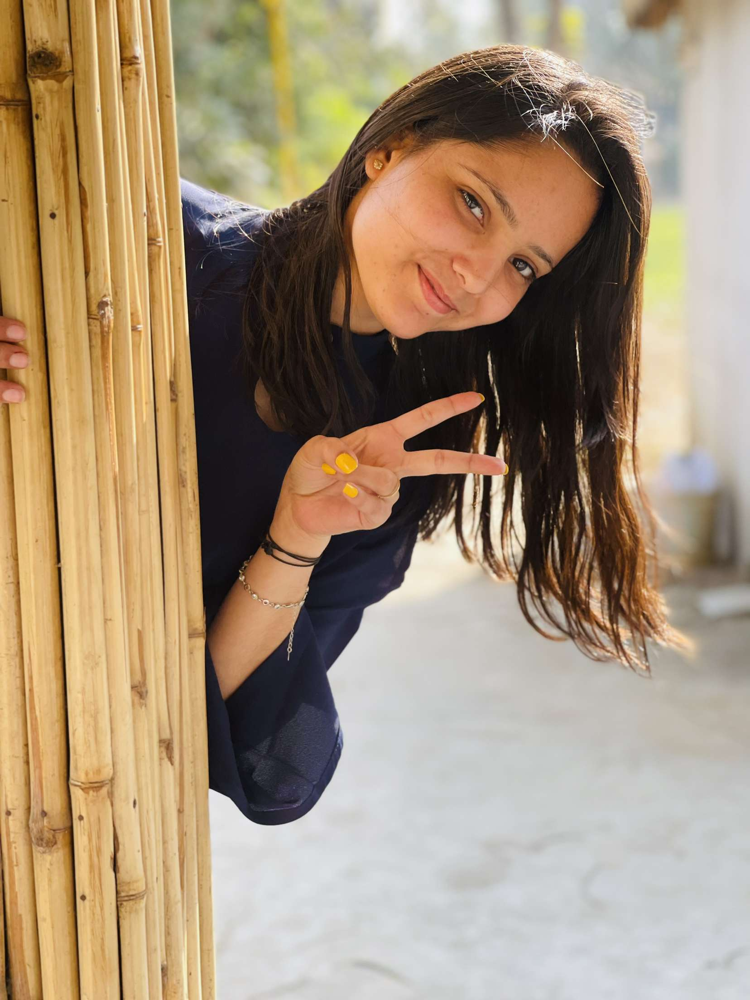
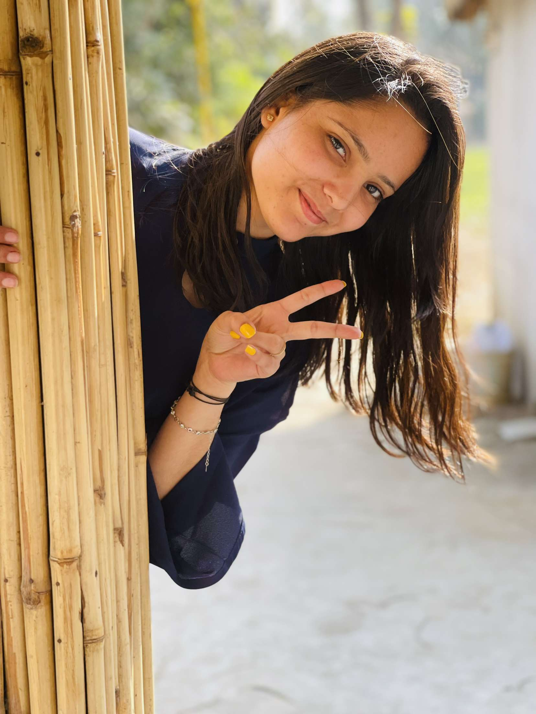

.jpg) 

Hi, I am Dilpreet Kaur. I am from Ludhiana,Punjab.I did my graduation in BCA(Bachelor's in Computer Application) from Guru Nanak Girls College. I did my matriculation from Harkrishan Sahib Public High School. Now, I am pursuing my Diploma in Web Development from GNDEC Step. I belong to a nuclear family. There are four members in my family - My Father, Mother, Sister and Me. My Sister is married. I am self motivated, hard working and a disciplined person. My hobbies are reading books, listening music, travelling new places and I am fond of sports. I am foody kind'a person. I love to meet new people and explore new things.
To Visit My School Web:Click Here
To Visit My College Web:Click Here
To Visit GNDEC Step:Click Here
I make a lot of sheets or pamphlets on my PC For Example: On Wordpad, Excel, Power Point and also some demo Web Pages while practising. So, here are some of my work done by me on my PC
To Visit Some of my Excel Sheets, Wordpad Sheets, Powerpoint Sheets or many more just click on the following buttons:
I'm social being person. I like to click pictures of nature and also mine too. As social media makes it easy to make new friends and it helps in communication to make it better. News from just about any part of the world can spread like wildfire on social media. It isn't just your inner circle of close friends and even closer family members that social networking sites allow you to communicate with easily and effectively. One of the good things about social media is its power to open the world up to you, making it a smaller place than it has ever been before.
Here are some of my social sites which helps you to make me understand more:
Instagram.jpg)
.jpg)
Here's my email if it's needed: Send Email
I love to eat alot. My favourate dish is Pizza and here is the easy and relevant way to make it from your home. Play the video to understand the recipe better.
Remarks
Give Remarks to my blog here: